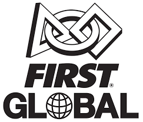
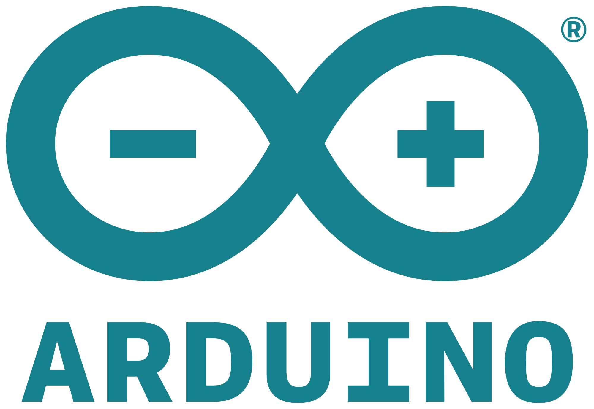
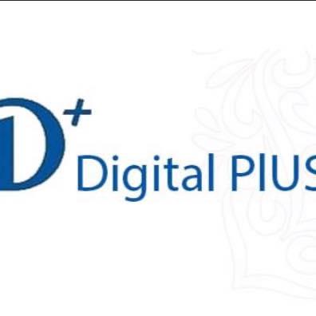

Qui suis-je ?
Je m'appelle Oumar Souleyman Oumar, j'ai 18 ans et je vis au Tchad plus précisement dans la ville de Ndjamena.
Je suis un lycéen, bachelier, doté d'un diplôme de BEPC au lycée Ibnou Cina.
Je suis curieux , autodidacte et surtout passionné.
Je dispose de certaines connaissances de base en informatique et je souhaite d'en apprendre d'avantage.
Je travaille également sur la conception des robots et leur programmation.
Je suis aussi membre d'une organisation appelée Wenak labs et Digital plus.
N'hésitez pas à parcourir mon site pour en apprendre d'avantage!
Parcours et expériences
Expériences professionnelles
2020
Créateur - oumar-souleyman-oumar.com
Créateur du site oumar-souleyman-oumar.com
2015 - 2017
Stagiaire - Wenak Labs
Acquisition de nouvelles connaissances de base en électronique et informatique.
2017 - 2020
Travailleur - Wenak Labs
Je travaille sur la conception et la programmation des robots avec quelques membres de l'équipe.
2019
Participant - First Global Challenge.
J'ai été participant de l'équipe du Tchad à la compétition internationale de robotique "First Global Challenge" qui a eu lieu à Dubai.
Parcours scolaire
2012 - 2015
Ecole primaire - La Réussite, Ndjamena.
J'ai fréquenté mes trois dernières années du primaire à l'école "la Réussite".
2015 - 2020
Sécondaire - Le Lycée Ibnou Cina, Ndjamena.
Par la suite, j'ai fréquenté le secondaire c'est à dire de la 6 e jusqu'au 2 nd, car je vous le rappelle je suis encore un lycéen.
2018 - 2019
BEPC - Le lycée Ibnou Cina, Ndjamena.
Obtention d'un diplôme de BEPC à la classe de la 3 e au lycée Ibnou Cina.
2021 - 2022
BAC - Le lycée Ibnou Cina, Ndjamena.
Candidat au baccalauréat au lycée Ibnou Cina.
Compétences et niveaux
Compétences
HTML
CSS
JavaScript
Python
Niveaux
AVANCÉ
AVANCÉ
MOYEN
MOYEN
Compétences
Arduino
Block
Scratch
Dart
Niveaux
AVANCÉ
AVANCÉ
AVANCÉ
AVANCÉ
Recommandations (Cliquez sur le logo)
First Global Challenge
L'équipe du Tchad dont Oumar en fait partie a participé à la compétition robotique "First Global Challenge" et l'equipe est très satisfaite!
Arduino
Arduino est la marque d'une plateforme de prototypage open-source qui permet aux utilisateurs de réaliser des projets!
Digital Plus
@digitalpluschad · Entreprise informatique.